Applications mobiles hors-ligne
Les agents saisissent les données à la source, dans la plantation, sans attendre le réseau.
Impact : fin des fiches papier perdues et des ressaisies.
Onze expertises, du conseil à l'intelligence artificielle, réunies chez un seul partenaire.
Notre secteur prioritaire : cartographie, traçabilité, conformité EUDR et IA au service des filières.
Notre plateforme de traçabilité agricole et de conformité RDUE / EUDR, de la parcelle à l'export.
L'agriculture est notre spécialité, pas notre limite : neuf secteurs couverts.
Toutes les technologies du marché, choisies pour votre contexte et non pour un éditeur.
Ouvrir la page TechnologiesGuides et analyses pour décider en connaissance de cause.
Une entreprise technologique africaine, basée à Abidjan et ancrée dans le terrain.
Diagnostic offert : un échange de 45 minutes, en visio ou à Abidjan. Réponse sous 24 heures ouvrées.
Cartographie, imagerie satellite, traçabilité, paiements par mobile money : nous concevons, développons et déployons les outils numériques des filières agricoles, pour les producteurs, les coopératives, les exportateurs et les acheteurs qui s'approvisionnent en Afrique.
Huit technologies que nous mettons au service des filières, et ce qu'elles peuvent apporter concrètement.
Les agents saisissent les données à la source, dans la plantation, sans attendre le réseau.
Impact : fin des fiches papier perdues et des ressaisies.
Chaque parcelle est délimitée, mesurée et reliée à son producteur sur une carte.
Impact : des superficies réelles et une base d'approvisionnement maîtrisée.
Suivi du couvert forestier, de l'état des cultures et des changements d'usage des terres.
Impact : un moyen de vérifier à distance l'absence de déforestation, en appui de votre diligence raisonnée.
Analyse des risques, estimation des rendements, repérage des anomalies dans les données.
Impact : des signaux pour préparer la campagne.
Météo locale, humidité des sols, conditions de stockage mesurées en continu.
Impact : moins de pertes après récolte, une meilleure qualité.
QR codes, registres sécurisés et rapprochement des volumes, du producteur jusqu'au port.
Impact : chaque sac relié à son origine.
Paiements tracés, primes versées sans espèces, historiques exploitables pour le crédit.
Impact : des paiements tracés, sans transport d'espèces.
Conseils, prix et alertes envoyés aux producteurs par SMS ou WhatsApp.
Impact : les bonnes pratiques au bon moment.
Une architecture de bout en bout, conçue pour fonctionner là où le réseau s'arrête.
Fiche producteur et polygone saisis sur le terrain, sans réseau.
Envoi des données dès que le téléphone capte.
Doublons, polygones incohérents et valeurs aberrantes détectés.
Tableaux de bord par coopérative, zone et campagne.
Rapports pour acheteurs, certificateurs et bailleurs.
Chaque domaine peut faire l'objet d'un projet à part entière ou s'intégrer à un système complet, conçu pour votre organisation.
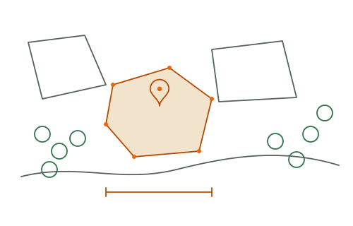
Les agents relèvent les contours de chaque plantation au GPS, dans une application de collecte qui fonctionne hors connexion. Les superficies sont calculées automatiquement et chaque parcelle est rattachée à son producteur.
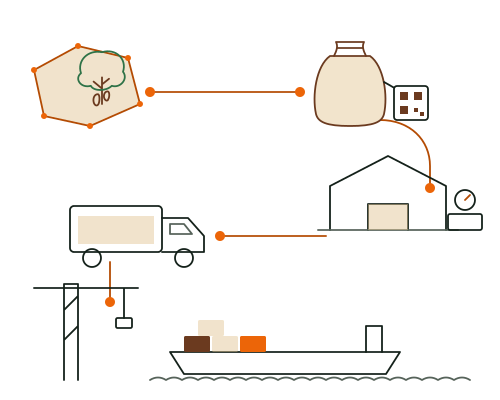
Du producteur à la coopérative, puis au magasin et au port, chaque transaction est enregistrée. Un QR code par sac ou par lot permet de remonter à l'origine.
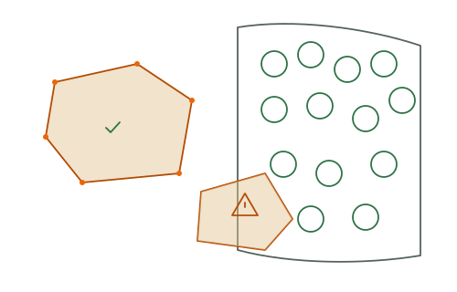
Nous transformons vos données terrain en dossier de conformité complet et cohérent : analyse du risque de déforestation, cohérence des volumes, documents prêts pour les audits.
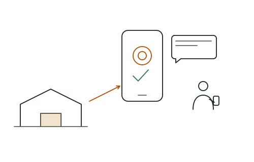
Nous concevons pour la coopérative un outil simple pour gérer membres, achats, primes et paiements. Les producteurs savent ce qu'ils ont livré et ce qu'ils ont reçu.
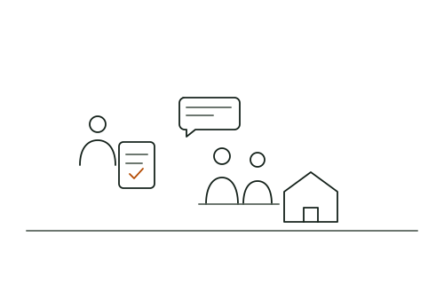
Nous concevons les questionnaires, formons les enquêteurs, supervisons la collecte et livrons des données propres, analysées et prêtes à présenter.
Des outils numériques pour les systèmes de suivi et de remédiation du travail des enfants (SSRTE / CLMRS), conçus avec vos équipes de protection de l'enfance.
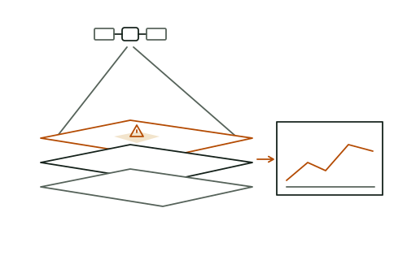
Nous combinons imagerie satellite, modèles d'apprentissage automatique et historiques de campagne pour anticiper plutôt que constater.
Coopérative, exportateur, acheteur ou programme : choisissez votre point de départ.
Registre des membres, achats, paiements par mobile money et formations.
VoirPour les exportateurs et les acheteurs : EUDR, vigilance, travail forcé et durabilité.
VoirDu diagnostic au support, un déploiement calé sur vos campagnes.
VoirEnquêtes, suivi-évaluation et tableaux de bord pour vos bailleurs.
VoirVos agents collectent sur le terrain, vos équipes suivent l'activité depuis le bureau, et vos acheteurs reçoivent les données dont ils ont besoin.
Exemple d'interface conçu pour illustrer nos projets, avec des données fictives.
Le règlement européen contre la déforestation (EUDR) exige que le cacao, le café, l'hévéa, le palmier à huile, le soja, le bois et les bovins mis sur le marché de l'UE, ou exportés depuis l'UE, soient « zéro déforestation », produits conformément aux lois du pays de production et couverts par une déclaration de diligence raisonnée.
Avant l'application aux grands et moyens opérateurs et négociants, le 30 décembre 2026. Micro et petits opérateurs : 30 juin 2027 (30 décembre 2026 pour ceux déjà soumis au règlement bois de l'UE).
5 questions, 2 minutes. Un score indicatif et des recommandations immédiates.
Le test interactif n'a pas pu se charger sur cette page. Ses cinq questions portent sur la géolocalisation de vos parcelles, le lien entre chaque lot et ses producteurs, la vérification de l'absence de déforestation après le 31 décembre 2020, la centralisation de vos données et votre capacité à fournir un dossier de diligence raisonnée à un acheteur. Faisons ce point ensemble, à partir de votre situation.
Faire le point sur l'EUDRLes parcelles de vos producteurs sont-elles toutes géolocalisées (point GPS, ou polygone au-delà de 4 ha) ?
Pouvez-vous relier chaque lot vendu aux producteurs et aux parcelles d'origine ?
Avez-vous vérifié l'absence de déforestation après le 31 décembre 2020 sur ces parcelles ?
Vos données producteurs sont-elles numériques, à jour et centralisées dans un seul outil ?
Pouvez-vous fournir un dossier de diligence raisonnée à un acheteur qui le demande demain ?
Chaque filière a son calendrier, ses acteurs et ses exigences de marché. Nous concevons chaque outil à partir de votre réalité.
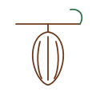
Traçabilité, EUDR, certification, protection de l'enfance.
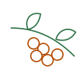
Origine des lots, qualité, cartographie.
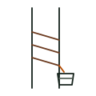
Suivi des plantations et traçabilité vers l'usinier.
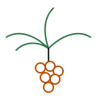
Planteurs villageois et traçabilité vers l'huilerie.
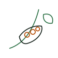
Achats, contrats producteurs et données d'origine.
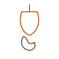
Achats, qualité des noix et gestion des stocks.
Registre producteurs, intrants et crédits de campagne.
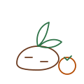
Groupements, accès au marché, suivi de projets.
Diagnostic offert : un échange de 45 minutes, en visio ou à Abidjan, pour analyser votre chaîne d'approvisionnement et identifier les priorités.